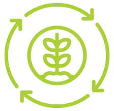

Renovación Recuperación Regeneración
NUESTRO PRÓPOSITO
espacio
- · La Bioestructura del suelo, haciendo más ligeros los suelos arcillosos y más compactos los arenosos.
- · La estructura del suelo y, con ello, se conserva una óptima humedad
- · La porosidad mediante los procesos de excavación de túneles y formación de sustancias pegajosas asociadas con la actividad biológica.
Renovamos
- · Biológicamente los daños causados por la labranza y el pisoteo del ganado.
- · a porosidad del suelo por medios biológicos más satisfactoria, que por medios mecánicos.
- · Microorganismos, como bacterias, e invertebrados grandes, como lombrices de tierra e insectos, que ayudan a descomponer los residuos de los cultivos mediante su ingestión
Renovamos

- Suelos, mediante hongos, que descomponen la materia orgánica más resistente, reteniendo en el suelo los nutrientes obtenidos bajo forma de biomasa de hongos y liberación de dióxido de carbono (CO2).
- Suelos degradados debido al desequilibrio por una mala producción biológica, disminuyendo la calidad del suelo.
- La vida edáfica creando un conjunto de propiedades emergentes que generan resiliencia, conservación y promueven la fertilidad, productividad y la biodiversidad de los suelos.
Renovamos
- · En el suelo la retención de agua que las plantas requieren para su crecimiento.
- · La arquitectura del suelo que ha sido dañada.
- · La disponibilidad de agua y aire, suministrando nutrientes a las plantas, destruyendo agentes contaminantes.
Recuperamos
- · En el suelo la retención de agua que las plantas requieren para su crecimiento.
- · La arquitectura del suelo que ha sido dañada.
- · La disponibilidad de agua y aire, suministrando nutrientes a las plantas, destruyendo agentes contaminantes.
Recuperamos
- · La población de microorganismos y las interacciones entre ellos estructurando la red alimenticia del suelo.
- · Suelos, promoviendo el desarrollo de reacciones químicas, físico-químicas y procesos microbiológicos.
- · La fertilidad y de las características físicas de los suelos, garantizando el adecuado reciclaje de nutrientes la estabilidad de los sistemas de producción.
Recuperamos
- · La población de lombrices de tierra, promoviendola actividad de los microorganismos mediante la fragmentación de la materia orgánica y el aumento del área accesible a los hongos y las bacterias.
- · La microflora del suelo, útil para la construcción del suelo y su fertilidad
- · Suelos mediantebacterias que descomponenincluso pesticidas y agentes contaminantes en el suelo.
Regeneramos
- · La actividad microbiana, positivamente influenciada por el mayor contenido de fuentes de energía y nutrientes en el suelo, aumentando su desarrollo y actividad, teniendo efectos positivos sobre el crecimiento vegetal, cerrando de esta manera, un ciclo de fertilidad en el suelo.
- · Suelos, con compactación y encostramiento de la capa superficial del suelo.
- · La fracción orgánica,rica en macro y micronutrientes.
Regeneramos
- · Suelos, incorporando biomasa microbiana a los suelos degradados.
- · El equilibrio entre los componentes de los suelos agrícolas , perdidos por incremento del número de las cosechas y al uso, a veces abusivo, de los fertilizantes minerales.
- · Las estructuras de carbono.
Regeneramos
SABEMOS CRECER EL CAMPO NATURALMENTE